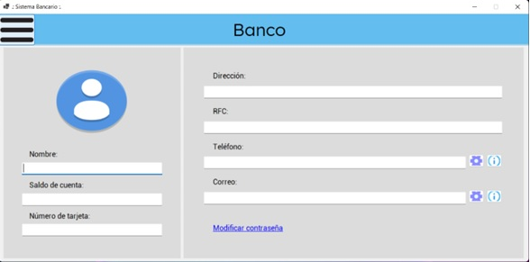
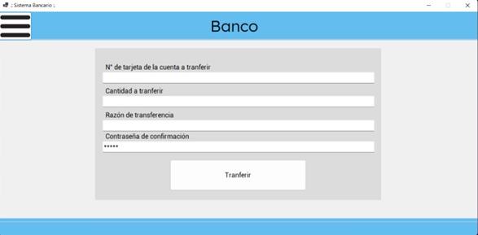

Aplicacion bancaria
Antes de saber que es uan aplicación bancaria debemos de saber identificar que es un sistema bancario. Un sistema bancario es un conjunto de instituciones dedicadas a las intermediación financiera. Su actividad consiste en captar el ahorro del público y, con es capital, solventar el otorgamiento de créditos y realizar inversiones
Por su parte, una aplicación bancaria es un servicio que puede ser proporcinado por un banco o por otra institución financiera que permite a sus cliente realizar transacciones como enví de dinero, pago, entre otras transacciones de manera 100% digital
Nuestra aplicación
Nuestra aplicación se basa en el concepto de aplicación bancaria. En esta página usted puede realizar transaccioes tales como hacer transferencias, retiro de efectivo y revisar el historial de transacciones en la cuenta. Si está interesado en saber cómo funciona de manera detallada el sistema, da click en el siguiente link.
 El por qué de la aplicación
La aplicación bancaria fue pensada de manera que fuera fácil de utilizar para usuarios poco relacionados con la tecnología. Pensando en un sistema minimalista, intuitivo y fácil de entender. Si te interesa saber cuales son los objetivos de nuestro sistema da click en el siguiente link